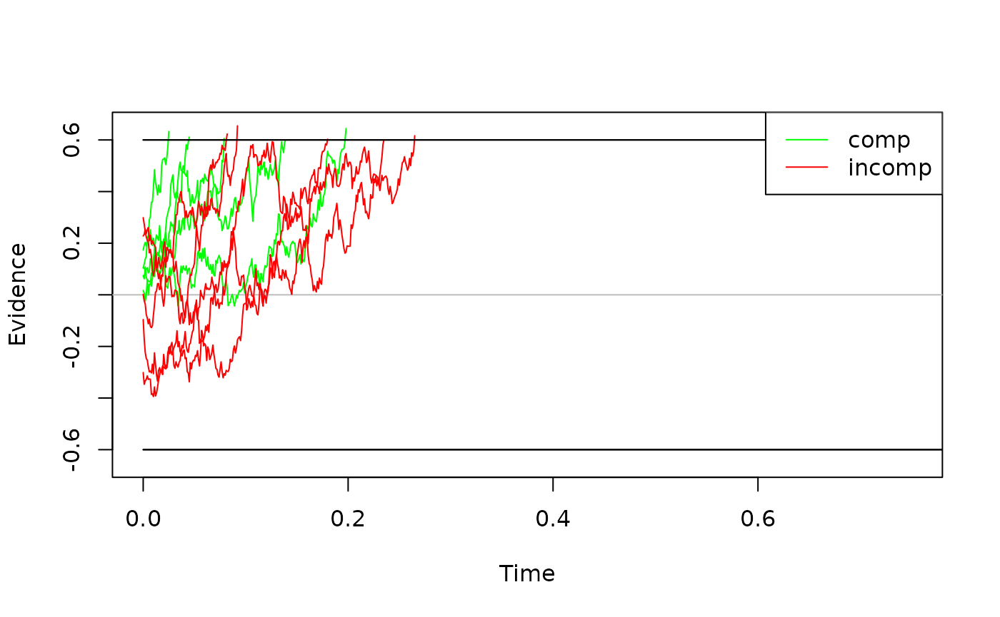
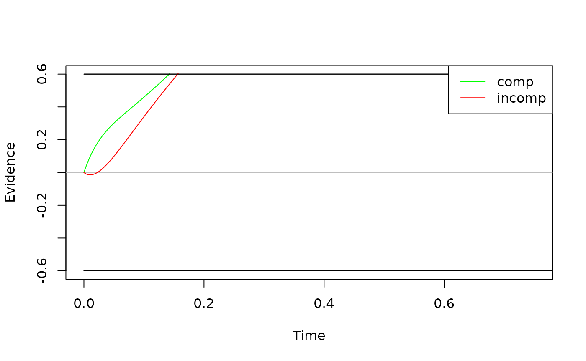
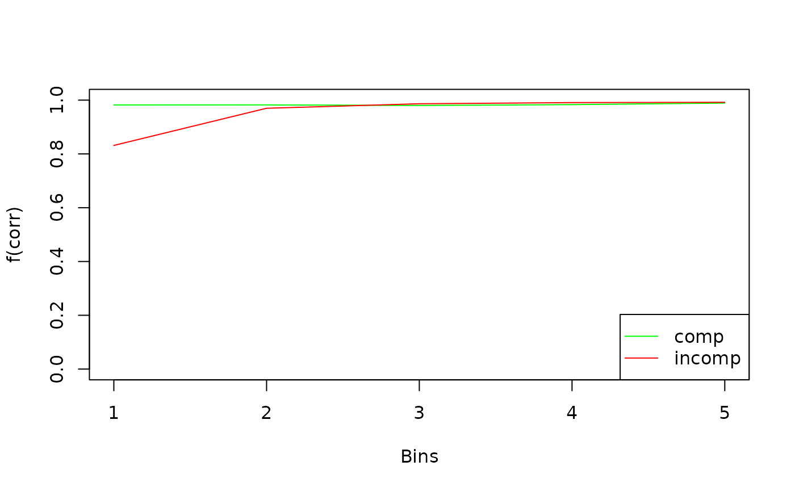
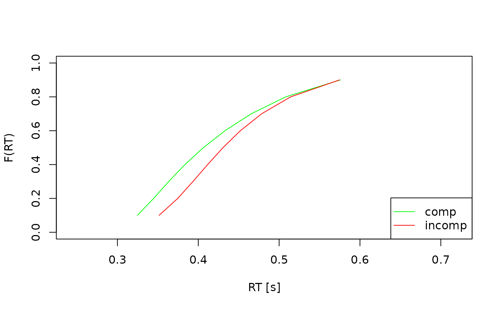
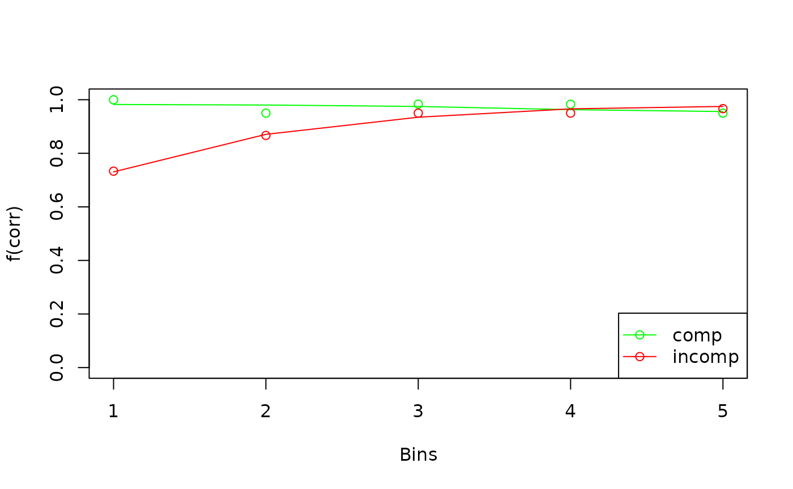
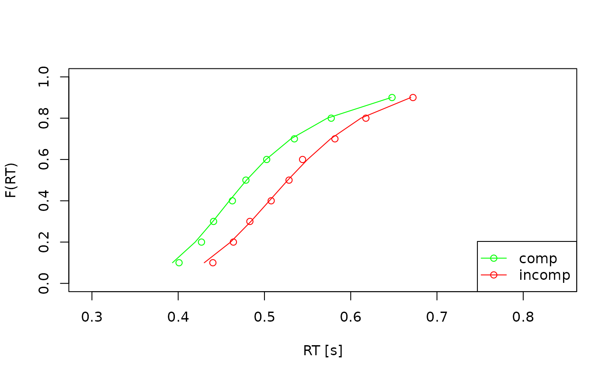
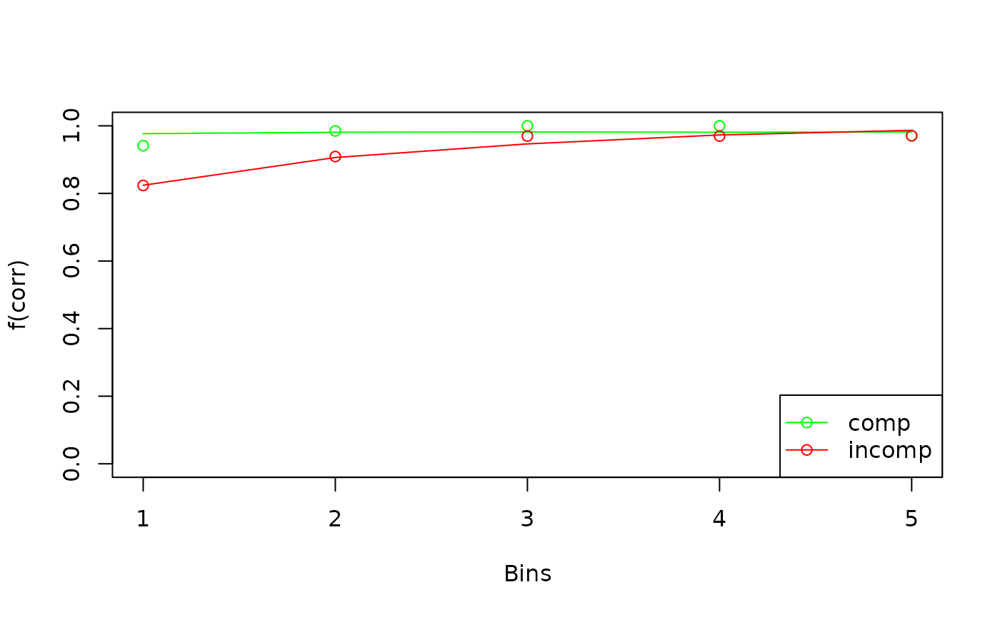
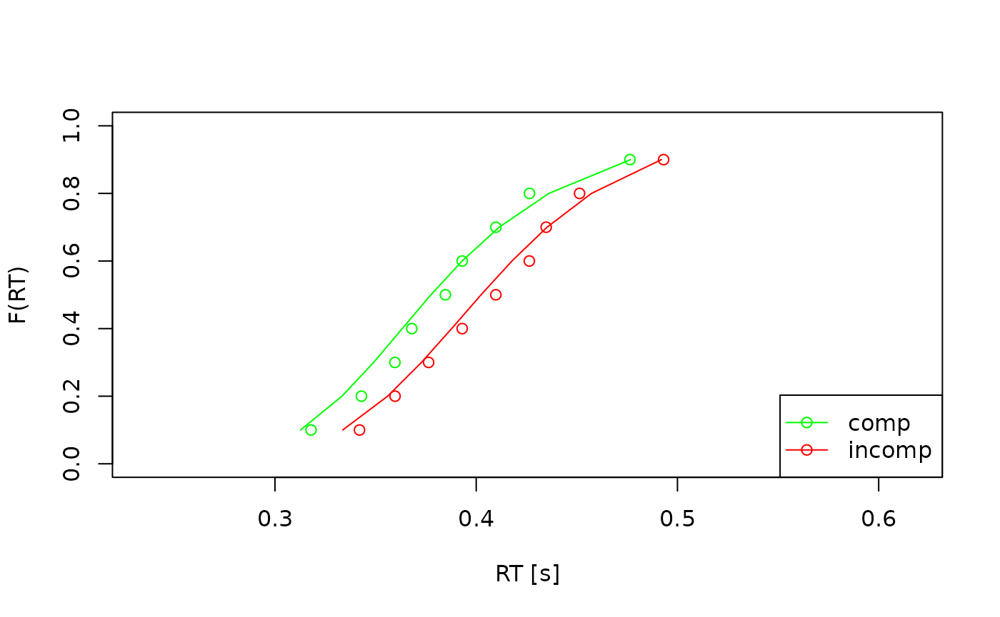

When working with drift-diffusion models (DDMs) you probably want to:
Build an new or select an existing model
Explore the model behavior and validate that model parameters are estimated reliably
Fit the model to data
Explore the model fit
The dRiftDM package helps you to do this:
With dedicated functions and workflows
Options to customize models
With efficient algorithms to derive the model predictions (see Richter, Ulrich, and Janczyk 2023)
Three pre-built models are currently available:
The Ratcliff Diffusion Model (see
ratcliff_dm(), Ratcliff 1978)The Diffusion Model for Conflict Tasks (see
dmc_dm(), Ulrich et al. 2015; Janczyk, Mackenzie, and Koob 2024)The Shrinking Spotlight Model (see
ssp_dm(), White, Ratcliff, and Starns 2011)
This document introduces you to dRiftDM, focusing on first steps in exploring and fitting a DDM.
An Examplary Model
To explore some of the basic functions of dRiftDM, we’ll use the
Diffusion Model for Conflict Tasks (DMC). It is a diffusion model
commonly employed in the context of cognitive psychology. To create the
model, we call the pre-built function dmc_fun() and assign
its output to a variable:
ddm <- dmc_dm()Basic Properties of a Model
When printing a model to the console, we obtain detailed information about it:
print(ddm)
#> Class(es): dmc_dm, drift_dm
#>
#> Current Parameter Matrix:
#> muc b non_dec sd_non_dec tau a A alpha
#> comp 4 0.6 0.3 0.02 0.04 2 0.1 4
#> incomp 4 0.6 0.3 0.02 0.04 2 -0.1 4
#>
#> Unique Parameters:
#> muc b non_dec sd_non_dec tau a A alpha
#> comp 1 2 3 4 5 0 6 7
#> incomp 1 2 3 4 5 0 d 7
#>
#> Special Dependencies:
#> A ~ incomp == -(A ~ comp)
#>
#> Custom Parameters:
#> peak_l
#> comp 0.04
#> incomp 0.04
#>
#> Deriving PDFs:
#> solver: kfe
#> values: sigma=1, t_max=3, dt=0.001, dx=0.001, nt=3000, nx=2000
#>
#> Observed Data: NULLHere we get a glimpse on the underlying structure of any model created with dRiftDM. For DMC this is:
The model is of type
dmc_dmThe model has the parameters
muc,b, …,alpha, and the current parameter values for each conditions are shown underCurrent Parameter Matrix.Below this, under
Unique Parameters, we obtain how each parameter behaves across conditions. If a number is the same for a parameter across conditions, this means that this parameter is equated across conditions. For example, the parametermucis assumed to be identical for the conditionscompandincomp. If a number is zero, this means that this parameter is assumed to be “fixed” and thus is not a “free” parameter that can be estimated. If an entry shows a “d”, this means there is a special dependency, as listed underSpecial Dependencies(seevignette("customize_ddms", "dRiftDM")for more information).When fitting or exploring a model, we will have to derive the model predictions in terms of the first-passage-times (i.e., the duration of central response selection in the context of psychology). The settings for this are shown under
Deriving PDFs. Currently, predictions are derived by a numerical discretization of the Kolmogorov-Forward-Equation (kfe). The diffusion constantsigmais 1, the maximum time space is 3 seconds, and the discretization in time and space is done in steps of 0.001.
Exploring a Model
To explore a model, dRiftDM provides:
simulate_traces()simulates realizations of the diffusion processcalc_stats()calculates summary statistics of model predictions
simulate_traces()
Realizations of a diffusion process, that is, single evidence accumulation traces for central response selection, are common ways to visualize a diffusion model. The first argument requires the model object. The second argument requires the number of realizations to simulate.
For example, we can simulate 5 traces for DMC per condition:
five_traces <- simulate_traces(object = ddm, k = 5)
five_traces
#> Class(es): traces_dm_list
#>
#> Time space:
#> 0.000, 0.001, 0.002, 0.003 ... 3.000
#>
#> Condition: comp
#> ~> 0.000, -0.033, -0.015, -0.082 ... 0.620
#> ~> 0.000, 0.023, 0.003, -0.003 ... 0.610
#> ~> 0.000, -0.017, -0.008, -0.055 ... 0.629
#> ~> 0.000, 0.008, -0.022, 0.037 ... 0.640
#> ...
#>
#> Condition: incomp
#> ~> 0.000, 0.002, 0.030, 0.009 ... 0.617
#> ~> 0.000, 0.050, -0.002, -0.034 ... 0.602
#> ~> 0.000, 0.014, -0.019, -0.017 ... 0.630
#> ~> 0.000, 0.024, -0.022, -0.084 ... 0.607
#> ...Per default, traces are simulated by assuming a fixed starting value
of zero. To simulate traces with a starting point, we can set the
argument add_x = TRUE:
five_traces <- simulate_traces(object = ddm, k = 5, add_x = TRUE)
five_traces
#> Class(es): traces_dm_list
#>
#> Time space:
#> 0.000, 0.001, 0.002, 0.003 ... 3.000
#>
#> Condition: comp
#> ~> 0.104, 0.119, 0.138, 0.149 ... 0.600
#> ~> 0.104, 0.104, 0.092, 0.099 ... 0.611
#> ~> 0.017, 0.006, -0.024, -0.001 ... 0.645
#> ~> 0.173, 0.192, 0.203, 0.191 ... 0.633
#> ...
#>
#> Condition: incomp
#> ~> -0.301, -0.347, -0.333, -0.328 ... 0.601
#> ~> -0.096, -0.173, -0.223, -0.247 ... 0.603
#> ~> 0.299, 0.273, 0.245, 0.224 ... 0.623
#> ~> 0.228, 0.234, 0.255, 0.237 ... 0.617
#> ...In the context of DMC, starting values of the traces are drawn from a symmetric beta distribution (see Ulrich et al. 2015).
We can easily visualize these traces by calling the generic
plot() method:

When visualizing the basic model behavior, one often wants to display
the expected time-course of the diffusion process. We can do so by
eliminating the stochastic noise with setting the argument
sigma = 0.
exp_behavior <- simulate_traces(object = ddm, k = 1, sigma = 0)
plot(exp_behavior, col = c("green", "red"))
calc_stats()
A DDM predicts response choices and response times, with the latter
being the sum of the first-passage-time (i.e., the duration of central
response selection) and the non-decision time. We can request summary
statistics of this prediction with calc_stats(). The first
argument requires the model object. The second argument a character
vector, specifying the type of summary statistic.
In the context of cognitive psychology, quantiles and so-called Conditional Accuracy Functions (CAFs) are common ways to summarize the model predictions:
sum_stats <- calc_stats(object = ddm, type = c("cafs", "quantiles"))
sum_stats
#> Element 1, contains cafs
#>
#> Source Cond Bin P_corr
#> 1 pred comp 1 0.982
#> 2 pred comp 2 0.982
#> 3 pred comp 3 0.980
#> 4 pred comp 4 0.983
#> 5 pred comp 5 0.989
#> 6 pred incomp 1 0.831
#> 7 pred incomp 2 0.970
#> 8 pred incomp 3 0.986
#> 9 pred incomp 4 0.991
#> 10 pred incomp 5 0.992
#>
#>
#> Element 2, contains quantiles
#>
#> Source Cond Prob Quant_corr Quant_err
#> 1 pred comp 0.1 0.325 0.321
#> 2 pred comp 0.2 0.345 0.342
#> 3 pred comp 0.3 0.363 0.360
#> 4 pred comp 0.4 0.383 0.378
#> 5 pred comp 0.5 0.406 0.397
#> 6 pred comp 0.6 0.433 0.417
#> 7 pred comp 0.7 0.465 0.441
#> 8 pred comp 0.8 0.508 0.474
#> 9 pred comp 0.9 0.576 0.530
#> 10 pred incomp 0.1 0.352 0.300
#> ...
#>
#> (extract the list's elements as usual, e.g., with $cafs)We can visualize summary statistics with the plot()
method:

Changing Model Properties
To get or set properties of the model, dRiftDM provides accessor/replacement methods for:
coef()accesses/replaces parameter valuesprms_solve()accesses/replaces settings for deriving model predictions (this also includes changing the diffusion constant)solver()accesses/replaces the method for deriving model predictionsb_coding()accesses/replaces the coding of the upper and lower boundaryobs_data()accesses/replaces the data set (of a single participant) attached to the modelflex_prms()accesses/replaces the object that controls how each parameter relates across conditionsconds()accesses/replaces the conditions of a modelcomp_funs()accesses/replaces the underlying component functions for the drift rate, boundary, etc.
comp_funs(), flex_prms(), and
conds() are covered in
vignette("customize_ddms", "dRiftDM").
coef()
coef(ddm)
#> muc b non_dec sd_non_dec tau A alpha
#> 4.00 0.60 0.30 0.02 0.04 0.10 4.00This returns a unique representation of the parameters and their associated values. Note that this drops parameters that are not estimable.
We can combine coef() with the [] operator
to change the values of the parameters:
coef(ddm)["muc"] <- 5
coef(ddm)
#> muc b non_dec sd_non_dec tau A alpha
#> 5.00 0.60 0.30 0.02 0.04 0.10 4.00To request the entire parameter matrix with all parameter values
across conditions, we can set the argument
select_unique = FALSE:
coef(ddm, select_unique = FALSE)
#> muc b non_dec sd_non_dec tau a A alpha peak_l
#> comp 5 0.6 0.3 0.02 0.04 2 0.1 4 0.04
#> incomp 5 0.6 0.3 0.02 0.04 2 -0.1 4 0.04In this case, we can not combine coef() with the
[] operator. To change a parameter value for a specific
condition, you can use the function modify_flex_prms().
prms_solve()
prms_solve(ddm)
#> sigma t_max dt dx nt nx
#> 1e+00 3e+00 1e-03 1e-03 3e+03 2e+03This shows the diffusion constant and the discretization settings. We
can again use a combination with [] to modify these
values.
prms_solve(ddm)["dt"] <- .0025
prms_solve(ddm)
#> sigma t_max dt dx nt nx
#> 1.0e+00 3.0e+00 2.5e-03 1.0e-03 1.2e+03 2.0e+03
solver()
solver(ddm)
#> [1] "kfe"This shows the currently set method for deriving the model’s
predicted probability density functions of response time and choice.
Currently supported options are "kfe" and
"im_zero". While the "kfe" method can be
applied to all models in dRiftDM, "im_zero" can only be
used when the starting point is fixed to zero.
b_coding()
b_coding(ddm)
#> $column
#> [1] "Error"
#>
#> $u_name_value
#> corr
#> 0
#>
#> $l_name_value
#> err
#> 1This returns a list that specifies how the boundaries of a DDM are coded. We can change the boundary coding by modifying the returned list:
obs_data()
We can set observed data of a single individual to a model (or access
it) with obs_data(). When setting observed data, we have to
make sure that the supplied data.frame provides columns
matching with the boundary coding and the conditions of the model.
data <- dRiftDM::dmc_synth_data # some synthetic data suitable for DMC that ships with dRiftDM
# the Cond column matches with conds(ddm).
# The Error column matches b_coding(ddm)
# the RT column is in seconds ;)
head(data)
#> RT Error Cond
#> 1 0.349 0 comp
#> 2 0.444 0 comp
#> 3 0.441 0 comp
#> 4 0.572 0 comp
#> 5 0.438 0 comp
#> 6 0.535 0 comp
obs_data(ddm) <- dataNote that the supplied data set is not stored “as is” within the model object. Thus, when accessing a data set of a model, the data is re-assembled, and this might change the order of rows or column with respect to the original data set.
The summary() Function
We can request a detailed summary of the model, providing information
about it’s core properties with the generic summary()
function:
summary(ddm)
#> Class(es): dmc_dm, drift_dm
#>
#> Current Parameter Matrix:
#> muc b non_dec sd_non_dec tau a A alpha
#> comp 5 0.6 0.3 0.02 0.04 2 0.1 4
#> incomp 5 0.6 0.3 0.02 0.04 2 -0.1 4
#>
#> Unique Parameters:
#> muc b non_dec sd_non_dec tau a A alpha
#> comp 1 2 3 4 5 0 6 7
#> incomp 1 2 3 4 5 0 d 7
#>
#> Special Dependencies:
#> A ~ incomp == -(A ~ comp)
#>
#> Custom Parameters:
#> peak_l
#> comp 0.04
#> incomp 0.04
#>
#> Observed Data:
#> min. 1st qu. median mean 3rd qu. max. n
#> corr comp 0.331 0.436 0.479 0.507 0.549 1.075 292
#> corr incomp 0.313 0.474 0.528 0.543 0.592 0.879 268
#> err comp 0.428 0.458 0.526 0.564 0.621 0.871 8
#> err incomp 0.302 0.398 0.452 0.458 0.498 0.771 32
#>
#> Fit Indices:
#> NULL
#>
#> -------
#> Deriving PDFs:
#> solver: kfe
#> values: sigma=1, t_max=3, dt=0.002, dx=0.001, nt=1200, nx=2000
#>
#> Boundary Coding:
#> upper: corr
#> lower: err
#> expected data column: Error (corr = 0; err = 1)Fitting a Model
To fit a model to observed data you can use:
estimate_model()fits a model to the data of one participantestimate_model_ids()a wrapper aroundestimate_model()to fit a model to multiple participants (participant-wise).
estimate_model()
Given a data set, the parameters of a model in dRiftDM are estimated via Differential Evolution and/or (bounded) Nelder-Mead. The cost function is based on the log-likelihood.
The first argument requires the model. The second and third arguments are the lower and upper boundaries of the search space. Per default, Differential Evolution is used, as it is more robust. Yet, to ensure that this vignette runs quickly, we will use Nelder-Mead.
A tricky choice regards the discretization settings. Per default, dRiftDM discretizes the time and evidence space in steps of 0.001. This is a conservative setting, ensuring high numerical accuracy. Yet, high numerical accuracy comes at the expense of a high computational burden that increases non-linearly. It is thus recommended to make the discretization more coarse to reduce the time waiting in front of the computer. As a rule of thumb, we currently recommend setting the discretization steps between 0.001 and 0.005. Yet, the impact of the respective settings depend on the model and its parameterization. As a consequence, users will have to make sure that their discretization settings lead to reasonable model predictions.
Another choice is the maximum time space. It should be large enough to easily cover the longest response time in the observed data set.
The following code adjusts the discretization settings, and subsequently fits DMC to a single data set.
# get some data (here we use again the synthetic data that ships with dRiftDM)
data <- dRiftDM::dmc_synth_data
head(data)
#> RT Error Cond
#> 1 0.349 0 comp
#> 2 0.444 0 comp
#> 3 0.441 0 comp
#> 4 0.572 0 comp
#> 5 0.438 0 comp
#> 6 0.535 0 comp
# increase the discretization steps to 0.005 and set the maximum time space to 1.5 seconds
prms_solve(ddm)["dt"] <- .005
prms_solve(ddm)["dx"] <- .005
prms_solve(ddm)["t_max"] <- 1.5
max(data$RT) # maximum time space easily covers the maximum RT
#> [1] 1.075
# attach the data to the model
obs_data(ddm) <- data
# now call the estimation routine
ddm <- estimate_model(
drift_dm_obj = ddm,
lower = c(muc = 1, b = .3, non_dec = .1, sd_non_dec = .005, tau = .03, A = .01, alpha = 2),
upper = c(muc = 6, b = .9, non_dec = .5, sd_non_dec = .050, tau = .12, A = .15, alpha = 9),
use_de_optim = FALSE, # overrule the default Differential Evolution setting
use_nmkb = TRUE
)
coef(ddm)
#> muc b non_dec sd_non_dec tau A alpha
#> 3.42861562 0.49852737 0.39639307 0.04461241 0.05974238 0.13098245 5.12756820We can also extract the fit statistic and information criteria:
Checking Model Fit (1)
To qualitatively check if a model fits the data, we can use
calc_stats() in combination with the plot()
method. Circles indicate observed data while lines indicate the model’s
predictions.
check_fit <- calc_stats(object = ddm, type = c("cafs", "quantiles"))
plot(check_fit, col = c("green", "red"))
estimate_model_ids()
Oftentimes, we don’t want to fit a model to a single individual, but
to multiple individuals. For this, you can use
estimate_model_ids(), which is a wrapper around
estimate_model(). In the following code chunk, we fit DMC
to the first two individuals of the flanker data set provided by Ulrich et al. (2015) (included in
dRiftDM).
flanker_data <- dRiftDM::ulrich_flanker_data
head(flanker_data)
#> ID RT Error Cond
#> 1 1 0.6016572 0 comp
#> 2 1 0.4514293 0 comp
#> 3 1 0.4180971 0 comp
#> 4 1 0.4514365 0 incomp
#> 5 1 0.4013124 0 comp
#> 6 1 0.4347489 0 incomp
flanker_data <- flanker_data[flanker_data$ID %in% c(1, 2), ]
obs_data(ddm) <- NULL # detach data (from the previous sections) to avoid a warning
estimate_model_ids(
drift_dm_obj = ddm,
obs_data_ids = flanker_data,
lower = c(muc = 1, b = .3, non_dec = .1, sd_non_dec = .005, tau = .03, A = .01, alpha = 2),
upper = c(muc = 6, b = .9, non_dec = .5, sd_non_dec = .050, tau = .12, A = .15, alpha = 9),
fit_procedure_name = "flanker_test_run", # a label to identify the fits
fit_path = tempdir(), # to save fits in the working directory use getwd()
use_de_optim = FALSE, # overrule the default Differential Evolution setting
use_nmkb = TRUE
)We can then load all saved fits using
load_fits_ids():
all_fits <- load_fits_ids(path = tempdir(), fit_procedure_name = "flanker_test_run")
all_fits
#> Fit procedure name: flanker_test_run
#> Fitted model type: dmc_dm, drift_dm
#> Time of (last) call: 2025-March-04_09-37
#> N Individuals: 2A summary of the parameter estimates across all conditions can be
requested via the generic summary() function:
summary(all_fits)
#> Fit Procedure Name: flanker_test_run
#> N Individuals: 2
#>
#> Parameter Summary: comp
#> muc b non_dec sd_non_dec tau a A alpha peak_l
#> mean 5.184 0.426 0.324 0.037 0.04 2 0.104 5.671 0.04
#> std_err 0.498 0.011 0.020 0.004 0.01 0 0.007 3.329 0.01
#>
#> Parameter Summary: incomp
#> muc b non_dec sd_non_dec tau a A alpha peak_l
#> mean 5.184 0.426 0.324 0.037 0.04 2 -0.104 5.671 0.04
#> std_err 0.498 0.011 0.020 0.004 0.01 0 0.007 3.329 0.01
#>
#>
#> Parameter Space:
#> muc b non_dec sd_non_dec tau A alpha
#> lower 1 0.3 0.1 0.005 0.03 0.01 2
#> upper 6 0.9 0.5 0.050 0.12 0.15 9
#>
#> -------
#> Fitted Model Type: dmc_dm, drift_dm
#> Time of (Last) Call: 2025-March-04_09-37Note that most of DMC’s parameters are per default equal across conditions. This is why you obtain exactly the same mean and standard errors for each condition. If you want to have the individual parameter estimates across conditions, you can call:
coef_fits <- coef(all_fits)
coef_fits
#> Object Type: coefs_dm
#>
#> ID muc b non_dec sd_non_dec tau A alpha
#> 1 1 4.686 0.437 0.343 0.033 0.030 0.111 9.000
#> 2 2 5.682 0.415 0.304 0.042 0.051 0.098 2.341
#>
#> (access the data.frame's columns/rows as usual)Fit statistics and information criteria across individuals can be extracted as well:
logLik(all_fits)
#> Type of Statistic: fit_stats
#>
#> ID Log_Like
#> 1 1 410.101
#> 2 2 383.912
#>
#> (access the data.frame's columns/rows as usual)
AIC(all_fits)
#> Type of Statistic: fit_stats
#>
#> ID AIC
#> 1 1 -806.202
#> 2 2 -753.824
#>
#> (access the data.frame's columns/rows as usual)
BIC(all_fits)
#> Type of Statistic: fit_stats
#>
#> ID BIC
#> 1 1 -779.482
#> 2 2 -727.146
#>
#> (access the data.frame's columns/rows as usual)Checking Model Fit (2)
As before, we can check the model fit using a combination of
calc_stats() and plot():
check_fit <- calc_stats(object = all_fits, type = c("cafs", "quantiles"))
plot(check_fit, col = c("green", "red"))
#> Aggregating across ID
#> Aggregating across ID
Simulating Data
To simulate data based on a model, we can use the
simulate_data() function. The first argument takes the
model object. The second argument is a numeric (vector), defining the
number of trials per condition:
ddm <- ratcliff_dm() # a model for demonstration purpose
sim_1 <- simulate_data(object = ddm, n = 200)
head(sim_1)
#> RT Error Cond
#> 1 0.684 0 null
#> 2 0.335 0 null
#> 3 0.388 0 null
#> 4 0.382 0 null
#> 5 0.563 0 null
#> 6 0.523 0 nullThis returns a single synthetic data set for one “participant”. Note
that the simulated response times depend on the time discretization. For
example, if the time discretization is dt = .005, then the
response times can only differ in steps of .005.
By specifying the argument k, we can simulate multiple
synthetic data sets simultaneously. In this case, however, we must also
specify lower and upper bounds to define the simulation space when
drawing random parameter combinations per data set (see the
simulate_data documentation for more details):
sim_2 <- simulate_data(
object = ddm, n = 200, k = 2,
lower = c(muc = 1, b = .4, non_dec = .2),
upper = c(muc = 6, b = .8, non_dec = .4)
)This returns a list with the synthetic data sets and the corresponding parameter values:
head(sim_2$synth_data)
#> RT Error Cond ID
#> 1 0.572 0 null 1
#> 2 0.409 0 null 1
#> 3 0.443 0 null 1
#> 4 0.507 0 null 1
#> 5 0.404 0 null 1
#> 6 0.466 0 null 1
head(sim_2$prms)
#> ID muc b non_dec
#> 1 1 5.609809 0.4194991 0.3820961
#> 2 2 3.415117 0.5610222 0.2108821The returned data sets are in a format that can be passed directly to
estimate_model_ids(), making parameter recovery exercises
very easy.
Remark: Stripping Away “Unnecesary” Attributes and Class Labels
Many functions in dRiftDM return summary statistics or
data.frames. Often these returned objects are S3 objects with a custom
class label. In principle, this is great because it allows you to reuse
generic functions like plot(), print(), or
summary() as we saw above.
However, sometimes this also hides the true structure of the
underlying data type. Therefore, we provide the
unpack_obj() function, which allows you to strip away
unnecessary attributes and class labels. This can be useful, for
example, if you want to create your own plot or wrangle the data into a
particular format.
ddm <- dmc_dm(dt = .005, dx = .005)
traces <- simulate_traces(ddm, k = 2)
# although this object is essentially a list of matrices, the class label ...
class(traces)
#> [1] "traces_dm_list"
print(traces) # ... leads to nicely formatted output; but hides the underlying structure
#> Class(es): traces_dm_list
#>
#> Time space:
#> 0.000, 0.005, 0.010, 0.015 ... 3.000
#>
#> Condition: comp
#> ~> 0.000, -0.023, -0.028, 0.040 ... 0.609
#> ~> 0.000, 0.219, 0.234, 0.355 ... 0.679
#>
#> Condition: incomp
#> ~> 0.000, 0.051, 0.059, 0.205 ... 0.753
#> ~> 0.000, 0.001, 0.080, 0.042 ... 0.637
raw <- unpack_obj(traces) # provides the plain list of matrices
head(t(raw$comp))
#> [,1] [,2]
#> [1,] 0.00000000 0.0000000
#> [2,] -0.02346033 0.2194351
#> [3,] -0.02815202 0.2338606
#> [4,] 0.03980365 0.3550320
#> [5,] 0.23576146 0.3012896
#> [6,] 0.28760829 0.1937707